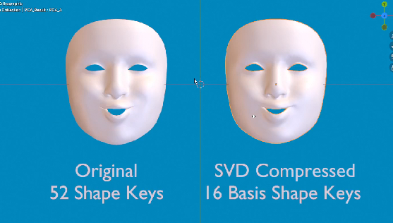
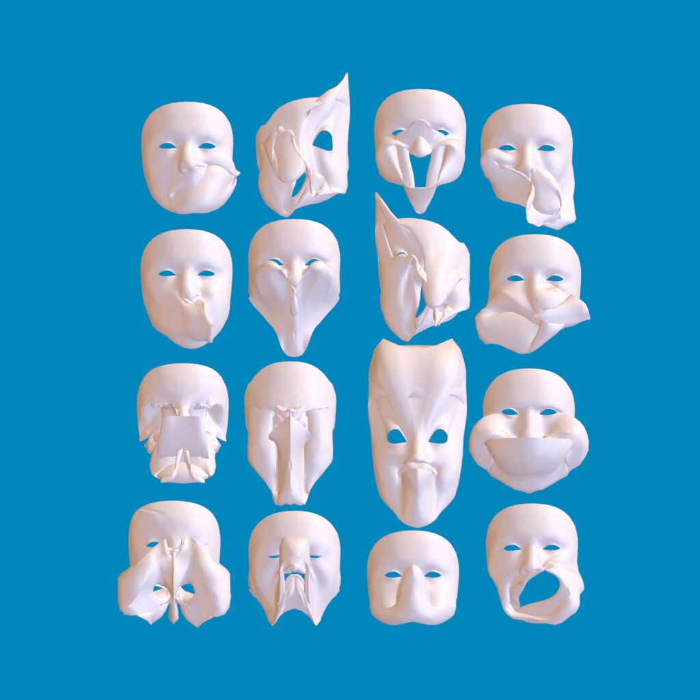
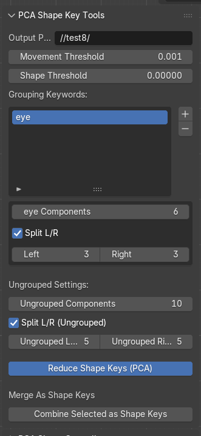

PCA for shape key reduction
I've been working on a method of shape key reduction using Principal Component Analysis PCA via Singular Value Decomposition.
My posts from July 27–30, 2025. The replies are in the original thread. Read the thread ↗

July 27, 2025
Not too much information is normally shared on Shape Keys - specifically how they are used in game engines (as Blendshapes and Morph Targets). And it should be common knowledge that using too many shape keys in game engines causes extreme performance loss when certain thresholds are crossed.
I’ve been working on a method of shape key reduction using Principal Component Analysis PCA via Singular Value Decomposition - which in theory can reduce say 52 shape keys into ~16 with minimal quality loss <1%.
I’ve seen this mentioned in SIGGRAPH papers and talks for AAA games like Uncharted and The Last of Us - but I’m curious why this is not more commonly utilized in the indie community?
Metahuman does something similar - but seems to be a black box, and I have not found any open source tooling to perform PCA on shape keys (or in general).
I’ll be updating here with the research and demos once I have this verified to work (specifically inside blender and with Unity as my initial target)- and intend to release this as an extension in the future.
Curious on thoughts on this - it kind of irked me when I saw vtuber rigs for ARkit use 52 shape keys (absolutely ridiculous to me, but it seems to be extremely poorly documented in unreal or unity documentation that this causes such a performance impact - and on top of this, the internals for GPU skinning in unity and morph targets is also underdocumented – it will kick to CPU at unknown limits based on your mesh, your scene, your specific scenario – somewhere around 8 concurrent shapes on a mesh with ~20k verts as far as I can tell)
It’s obviously an issue major AAA studios have solved, mention, and promptly black-box, but isn’t that crazy, just a little linear algebra.
Original post ↗July 27, 2025
Yep it is tricky. My initial focus is on the 52 ARKit standard face shapes to get this working as a POC - but you bring up a good point- how do you control as an artist the reduced PCA keys?
This is done via a projection coefficient matrix. This is essentially a list of all your original shape keys and the percentage of each of the PCA reduced shape keys to reconstruct each of your original shapes. This will make more sense when I upload the support (likely later this afternoon).
Initially I will create a separate shape key menu which will look identical to your original list of keys (all 52) to animate / use. These will drive the PCA reduced set based on the matrix. Further down the line, I’ll have to integrate some kind of keyframe remapping to drive the PCA, for if you have already animated (via bones or directly) and remap drivers to control my custom menu instead of direct shape keys.
I was kind of tongue in cheek saying “just linear algebra” - it is a very complex project to get right. I’d honestly be really interested in testing it out on a file like your example once my baseline is tested and working, I don’t have a big bank of “real world” examples I can pull from right now.
Original post ↗July 27, 2025
Yep that PCA Basis value I’ve been referencing is essentially the compression quality (how many shapes should it try to compress into)
And what you are asking is exactly where I’m at right now, even to me, a linear blend between 2 PCA shapes describing specific shape keys seems like there might be weird artifacting or deformation (but in everything I’ve read so far this is a non-issue) so I’m excited to figure this out and report back.
In terms of depsgraph… It could be heavy- because it’s an additional step, less overall shapes but still an additional compute step to figure them out. My focus is for game engines though. The ‘correct’ implementation of this long term would be moreso on export- you really shouldn’t have to think about it (like how metahuman just does something similar and in the background but user does not notice). Like on export convert all your shape keys, redefine your animation curves to PCA- in engine you’d see idk 8-20 shapes (whatever you define) instead of 100+ but your workflow for animation in theory should not change (in a perfect world)
Original post ↗July 27, 2025
ABSOLUTELY could cause turmoil in the pipeline. New shape keys and altering existing will require new PCA to be ran and all animation could very well break. Not much use in film because of this (I did see some comments of feature films using this in a different way, but I think that is more of an early 2000s mindset when PCs would stall with 200+ shape keys on advanced rigs). But yeah everything you are saying is on point I’m glad people can follow and I’m not just going insane.
Original post ↗July 28, 2025
Ok update: 52 ARKit shapes compressed to 16 worked pretty well! I’ll post images or video later. But @sozap was right in saying this will be difficult for extreme stylization. The most telling indication of this is “eye_blink_left” (and right) essentially do not come through whatsoever. This is because they are a small amount of localized verts that are not utilized in many of the shapes.
My plan is to first run at least 3 PCA tests: 52 → 16 (the one I’ve done) 52 → 24 (see if it catches blinking) 52 → 8 (see how far we can go and what shapes get compressed too far)
I think the final form of this may be a selection menu for shapes to keep vs shapes to compress OR I can use the PCA result to analyze which shapes did not get good representation.
Will be doing a little research into what kind of layering AAA does for this method (do they compress left side of face and right side separately? Are there shapes they always keep uncompressed like blinks and jaw movement? What shapes are typically bone driven rather than shapes when PCA is utilized?)
I finished a scrappy menu which controlls the PCA basis shapes by altering slider values mocking the original shapes, but needs some improvement so I can run ROM animation tests and comparisons without as much manual work. Thanks for sticking with me if you’re reading this, some cool images and video to support this research coming very soon.
Original post ↗July 28, 2025
This got me some good information (video on google drive going though all current compressed shapes vs original https://drive.google.com/drive/folders/1ZT4C08ZB2g3Y_ZNsBqYj7wmz29xUYKdz?usp=sharing ). I will be running PCA on grouped sections and working on my algorithm - right now, it takes into account all vertices, where it should only take into account localized verts modified by a ‘specific set’ of keys (i.e. something like eyes, mouth, main). Each of these sets can probably be reduced to less, so I can get a result of 16 (my general target).
I still think this is impressive (minus the eyes) seeing as the face on the right only has 16 shape keys and probably 30 of these are passable even though my math is not locked in.
Original post ↗July 28, 2025
if you are curious what these 16 basis shapes look like isolated – here is the nightmare


July 29, 2025
I just finished a UI to be able to separate out groups based on naming and apply specific basis numbers per group, on top of that, it will need to retain certain keys in full. Takes about 20 min each time I run the algorithm so I’m just trying to carefully chip away at this on a dedicated machine. Btw term for what your saying would be ‘heatmap’ and yes totally want to do this once I am closer and calculate visually and with a value the percentage error
Original post ↗July 30, 2025
The work continues. I see why no one has tackled this. Grouping keywords work wonders, but L/R splits on geometry without perfect mirroring still takes a hit, I’ve localized subgroups of groups to a act on left and right basis within groups.

